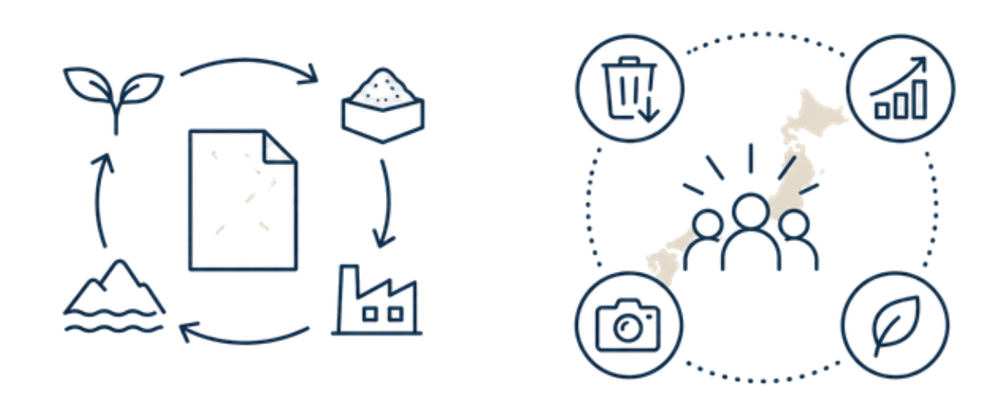

OUR MISSION
地域には、まだ見える形になっていない素材や物語があります。
岡田印刷は、地域の名産品を"紙"という媒体にかたどり、地域のブランド価値として届けます。
岡崎で生まれた取り組みを、全国各地の地域資源へと広げていきます。
FLAGSHIP PROJECT
地元の銘紙プロジェクト
地域で生まれた素材や加工残渣・副産物を活かし、地域の物語を纏った紙へと再生するプロジェクトです。地域の生産者、企業、自治体と連携し、その地でしか生まれない「銘紙」を作ります。
廃棄物削減、ブランド価値向上、観光・PR効果、環境負荷低減を同時に実現するモデルケースとして、岡崎から全国へ展開することを目指しています。
KeyWord
廃棄物削減
ブランド価値向上
地域PR
環境負荷低減


こんな方々と連携しています
地域企業・製造業
農業・食品生産者
自治体・観光協会
ブランド企業
伝統産業・職人